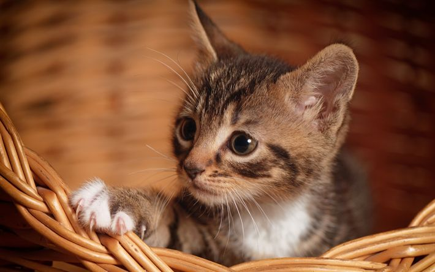

Qui sotto troverai elencate le varie forniture per poter convivere con un gatto.
Graffiare su un tiragraffi è un comportamento naturale, istintivo e necessario per i felini.
I motivi principali sono:
• Cura delle unghie: Grattando le superfici ruvide, il gatto rimuove lo strato esterno morto dell'artiglio (la guaina consumata), favorendo la crescita di un'unghia nuova e sana.
• Marcatura del territorio: Sotto i polpastrelli dei gatti ci sono delle ghiandole che rilasciano feromoni. Quando il gatto graffia, lascia sia un segnale visivo (i solchi del graffio) sia un segnale olfattivo per comunicare la sua presenza.
• Stretching e scarico dello stress: Graffiare permette al gatto di allungare l'intera muscolatura della schiena e delle zampe, oltre a sfogare l'energia in eccesso o la frustrazione.
I gatti hanno bisogno di stimoli diversi a seconda della loro personalità: alcuni amano cacciare, altri preferiscono esplorare o risolvere piccoli enigmi.
I migliori giochi per gatti si dividono in quattro categorie principali, ognuna pensata per soddisfare un istinto naturale specifico.
Troverai alcuni esempi per poter familiarizzare con il tuo nuovo gatto e capire cosa gli piace di più.
Scegliere la lettiera corretta per il tuo micio non è solo una questione di pulizia domestica, ma un aspetto fondamentale per la salute del gatto e la serenità della convivenza in casa.
